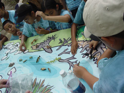
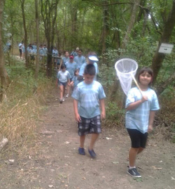
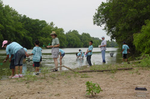
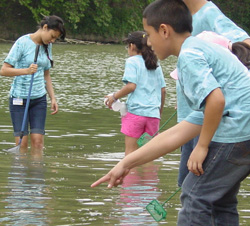
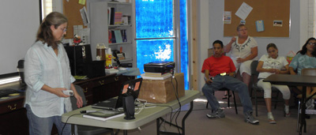
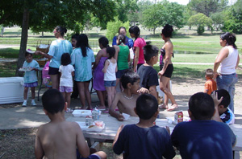
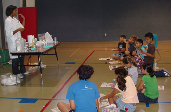
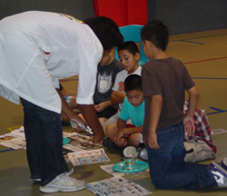

Advocacy Outreach
200 Depot Street,
P. O. Box 169, Elgin,
Texas 78621
Phone 512 281-4180
FAX 512 281-9599
Even Start Summer Program 2012
Water, Water Everywhere!!
~Page 2~
Traveling to the Colorado River in Bastrop, we met with the wonderful volunteers of the Pine & Prairies Trust River Refuge. They provided many activities for us to experience and discover how life was in and around the river.

Under the shade of trees, our guide had us gather around his large table that showed a portion of the river on it. He brought out many figures of animals that lived in and around the river and had the children place them where they thought the animals lived. He talked to us about the food chain and preserving the balance of nature in the area. There were many birds, coyotes, snakes, horny toads, road runners and other wild life of this area.

We next took a long hike through the woods to name trees and plants, and perhaps get a glimpse of some of the wildlife. One guide had some of the children draw cards for a specific species and then yarn was attached to each and also to their food so that when we were done there was a huge web of life interactions and connections.
Lastly we walked down to the Colorado River and the children went in to the water to catch small life forms. They gathered many types of tiny fish, and micro organisms that were living in the river.
 
The guides helped the children to identify them and some were kept for examples. From the species gathered, it showed us this river was unpolluted. We thanked out guides and return to our busses.
The next day, the parents went to the Advocacy Outreach computer lab to listen to Margie Crisp, author and illustrator of “River of Contrasts, the Texas Colorado” tell tails of her adventure to gather the information that later became her book.

The Camp children all went to enjoy free lunch in the park provided then went for a swim in the Elgin pool.

Mad Sciencist, Nebula, came and presented Wacky Water..... some interesting water activities showing the properties of water.
 
<<Back ~ Page 1 ~ Page 2 ~ Page 3 ~ Next page >>